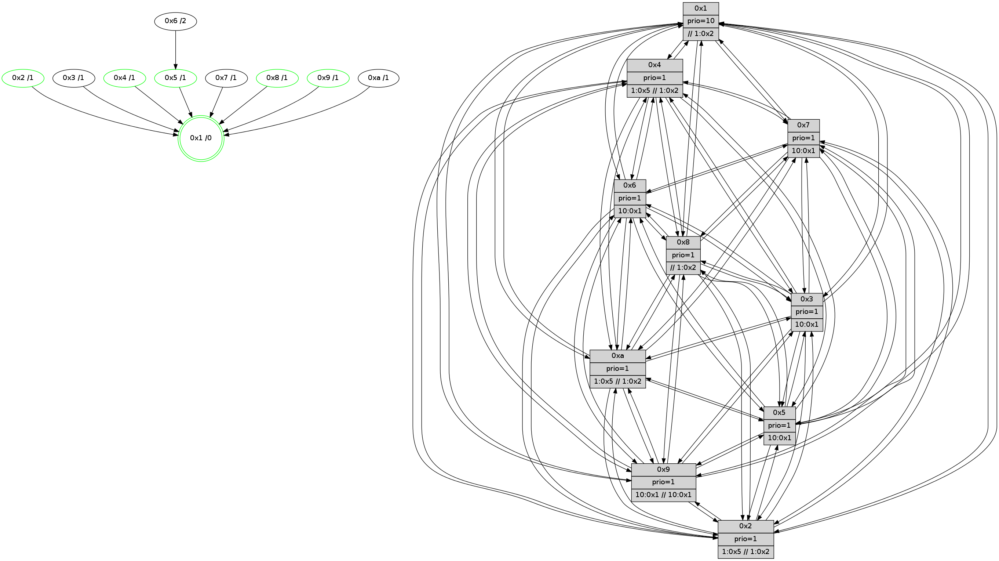

>> << IDX [start] -100 -25 -5 +0 +5 +25 +100 [690.043195009]
 Previous packets
----------------------------------------------------------------------
685.314404 beacon01(faad) #0 coord=01,02,03,04,05,06,07,0a,09,08 cycle=688.0ms assoc
-- color-indic=1 64 5c 87
685.324386 beacon02(faad) #0 coord=01,02,03,04,05,06,07,0a,09,08 cycle=688.0ms assoc 64 cf b6
685.334387 beacon03(faad) #0 coord=01,02,03,04,05,06,07,0a,09,08 cycle=688.0ms assoc 64 b5 fb
685.344389 beacon04(faad) #0 coord=01,02,03,04,05,06,07,0a,09,08 cycle=688.0ms assoc 64 c2 11
685.354386 beacon05(faad) #0 coord=01,02,03,04,05,06,07,0a,09,08 cycle=688.0ms assoc 64 b8 5c
685.364388 beacon06(faad) #0 coord=01,02,03,04,05,06,07,0a,09,08 cycle=688.0ms assoc 64 36 8b
685.374387 beacon07(faad) #0 coord=01,02,03,04,05,06,07,0a,09,08 cycle=688.0ms assoc 64 4c c6
685.384394 beacon0a(faad) #0 coord=01,02,03,04,05,06,07,0a,09,08 cycle=688.0ms assoc 64 3d cd
685.394392 beacon09(faad) #0 coord=01,02,03,04,05,06,07,0a,09,08 cycle=688.0ms assoc 64 b3 1a
685.404393 beacon08(faad) #0 coord=01,02,03,04,05,06,07,0a,09,08 cycle=688.0ms assoc 64 c9 57
685.416193 [Hello(10): seq=372 sym=6,2,3,8,9,5,7,4,1 sysInfo= stat=6:8,2,5,2/2:8,15,11,1/3:12,1,10,4/8:5,14,1,6/9:12,1,0,4/5:12,9,0,8/7:6,12,2,3/4:4,0,12,6/1:6,7,4,1]
685.419559 [Color(1) seq=120 @0:0 prio=10 >>1.@2,1.@3,1.@4]
685.421822 [Hello(9): seq=383 sym=5,2,3,4,7,6,8,10,1 sysInfo=hasWarning stat=5:15,2,15,8/2:1,11,7,5/3:14,8,14,7/4:1,2,0,5/7:8,6,6,3/6:1,11,1,5/8:12,4,8,2/10:14,6,4,7/1:4,11,6,1]
685.424835 [Hello(2): seq=436 sym=4,5,7,6,3,9,8,10,1 sysInfo=hasWarning stat=4:9,12,1,4/5:3,8,0,1/7:12,11,6,4/6:14,3,3,5/3:15,8,14,2/9:7,6,15,1/8:1,5,12,4/10:8,1,0,4/1:5,11,15,1]
685.428277 [Hello(5): seq=440 sym=7,6,4,3,1,9,8,10,2 sysInfo= stat=7:5,15,5,4/6:4,0,4,6/4:14,10,14,5/3:7,5,13,5/1:7,15,3,1/9:8,14,2,3/8:11,15,13,4/10:2,11,3,5/2:4,6,1,0]
685.431467 [Color(4) seq=83 @0:0 prio=1 >1.@5 >>1.@2,1.@3,1.@4]
685.435828 [Hello(8): seq=383 sym=5,2,3,4,7,6,9,10,1 sysInfo=hasWarning,coloring-mode-on,ColoringModeIndicationCalled stat=5:4,10,4,7/2:13,0,12,2/3:4,3,0,8/4:12,14,4,6/7:5,13,4,6/6:1,4,0,7/9:11,2,5,5/10:0,12,3,6/1:9,9,4,0]
685.438487 [Color(2) seq=85 @0:0 prio=1 >1.@5 >>1.@2,1.@3,1.@4]
685.447948 [Color(5) seq=93 @0:0 prio=1 >10.@1,1.@2,1.@3,1.@4]
----------------------------------------------------------------------
686.102534 beacon01(faad) #0 coord=01,02,03,04,05,06,07,0a,09,08 cycle=688.0ms assoc
-- color-indic=1 64 88 b2
686.112515 beacon02(faad) #0 coord=01,02,03,04,05,06,07,0a,09,08 cycle=688.0ms assoc 64 1b 83
686.122515 beacon03(faad) #0 coord=01,02,03,04,05,06,07,0a,09,08 cycle=688.0ms assoc 64 61 ce
686.132516 beacon04(faad) #0 coord=01,02,03,04,05,06,07,0a,09,08 cycle=688.0ms assoc 64 16 24
686.142517 beacon05(faad) #0 coord=01,02,03,04,05,06,07,0a,09,08 cycle=688.0ms assoc 64 6c 69
686.152519 beacon06(faad) #0 coord=01,02,03,04,05,06,07,0a,09,08 cycle=688.0ms assoc 64 e2 be
686.162517 beacon07(faad) #0 coord=01,02,03,04,05,06,07,0a,09,08 cycle=688.0ms assoc 64 98 f3
686.172522 beacon0a(faad) #0 coord=01,02,03,04,05,06,07,0a,09,08 cycle=688.0ms assoc 64 e9 f8
686.182521 beacon09(faad) #0 coord=01,02,03,04,05,06,07,0a,09,08 cycle=688.0ms assoc 64 67 2f
686.192523 beacon08(faad) #0 coord=01,02,03,04,05,06,07,0a,09,08 cycle=688.0ms assoc 64 1d 62
686.203708 PARSE ERROR************************
Traceback (most recent call last):
File "PacketAnalysis.py", line 167, in showOperaPacket
structPacket = OperaPacketParse.parsePacket(rawPacket)
File "../../pkg-python/HipSens/Core/OperaPacketParse.py", line 461, in parsePacket
return parseHelloMessage(data)
File "../../pkg-python/HipSens/Core/OperaPacketParse.py", line 125, in parseHelloMessage
struct.unpack("!H",linkList[:2])[0])
error: unpack requires a string argument of length 2
48 34 03 00 01 b8 00 02 02 12 01 00 07 00 06 00 02 00 04 00 08 00 09 00 0a 00 05 00 53 04 00 00 00 00 4c 12 14 00 11 01 7e 94 82 81 42 bd 20 1a 67 fc 53 82 72 6a 4d ea
686.207013 [Hello(6): seq=440 sym=2,3,5,4,7,9,8,10,1 sysInfo= stat=2:9,14,12,7/3:8,14,4,6/5:4,12,3,9/4:8,15,4,0/7:0,1,1,0/9:7,12,5,6/8:3,11,4,5/10:10,7,10,6/1:8,2,15,1]
686.209585 [Hello(7): seq=440 sym=2,3,5,6,4,8,9,10,1 sysInfo=hasWarning stat=2:3,10,11,9/3:5,14,5,8/5:4,14,6,11/6:13,9,4,2/4:1,5,1,0/8:10,1,8,4/9:6,7,8,8/10:12,5,9,7/1:15,15,3,1]
686.212213 [Color(8) seq=120 @0:0 prio=1 >>1.@2,1.@3,1.@4]
686.215668 [Hello(4): seq=440 sym=5,7,6,2,3,9,8,10,1 sysInfo= stat=5:5,13,1,7/7:4,15,4,2/6:13,5,5,7/2:11,15,0,7/3:3,5,11,4/9:5,5,1,3/8:13,10,3,7/10:0,9,5,6/1:8,13,4,1]
686.221460 [Hello(1): seq=349 sym=4,2,9,5,10,3,8,6,7 sysInfo=coloring-mode-on,ColoringModeRequestCalled stat=4:12,15,4,0/2:7,14,10,8/9:11,4,4,0/5:7,12,2,0/10:13,15,10,7/3:10,12,15,10/8:14,12,14,6/6:13,10,9,6/7:14,13,15,8]
----------------------------------------------------------------------
686.890666 beacon01(faad) #0 coord=01,02,03,04,05,06,07,0a,09,08 cycle=688.0ms assoc
-- color-indic=1 64 34 b7
686.900648 beacon02(faad) #0 coord=01,02,03,04,05,06,07,0a,09,08 cycle=688.0ms assoc 64 a7 86
686.910649 beacon03(faad) #0 coord=01,02,03,04,05,06,07,0a,09,08 cycle=688.0ms assoc 64 dd cb
686.920649 beacon04(faad) #0 coord=01,02,03,04,05,06,07,0a,09,08 cycle=688.0ms assoc 64 aa 21
686.930649 beacon05(faad) #0 coord=01,02,03,04,05,06,07,0a,09,08 cycle=688.0ms assoc 64 d0 6c
686.940649 beacon06(faad) #0 coord=01,02,03,04,05,06,07,0a,09,08 cycle=688.0ms assoc 64 5e bb
686.950650 beacon07(faad) #0 coord=01,02,03,04,05,06,07,0a,09,08 cycle=688.0ms assoc 64 24 f6
686.960654 beacon0a(faad) #0 coord=01,02,03,04,05,06,07,0a,09,08 cycle=688.0ms assoc 64 55 fd
686.970654 beacon09(faad) #0 coord=01,02,03,04,05,06,07,0a,09,08 cycle=688.0ms assoc 64 db 2a
686.980656 beacon08(faad) #0 coord=01,02,03,04,05,06,07,0a,09,08 cycle=688.0ms assoc 64 a1 67
686.992183 [Hello(8): seq=384 sym=5,2,3,4,7,6,9,10,1 sysInfo=hasWarning,coloring-mode-on,ColoringModeIndicationCalled stat=5:4,11,4,7/2:13,1,12,2/3:5,3,0,8/4:13,14,4,6/7:5,13,4,6/6:1,4,0,7/9:11,2,5,5/10:0,12,3,6/1:10,9,4,0]
686.995128 [Color(4) seq=84 @0:0 prio=1 >1.@5 >>1.@2,1.@3,1.@4]
686.996936 [Hello(5): seq=441 sym=7,6,4,3,1,9,8,10,2 sysInfo= stat=7:6,15,5,4/6:5,0,4,6/4:15,10,14,5/3:8,5,13,5/1:8,15,3,1/9:8,14,2,3/8:11,0,13,4/10:3,11,3,5/2:4,6,1,0]
687.000085 [Hello(10): seq=373 sym=6,2,3,8,9,5,7,4,1 sysInfo= stat=6:9,2,5,2/2:9,0,11,1/3:13,1,10,4/8:6,15,1,6/9:13,1,0,4/5:13,10,0,8/7:7,12,2,3/4:5,1,12,6/1:7,8,4,1]
687.002891 [Hello(2): seq=437 sym=4,5,7,6,3,9,8,10,1 sysInfo=hasWarning stat=4:10,12,1,4/5:3,9,0,1/7:13,11,6,4/6:15,3,3,5/3:0,8,14,2/9:7,6,15,1/8:1,6,12,4/10:9,1,0,4/1:6,11,15,1]
687.005639 [Color(5) seq=94 @0:0 prio=1 >10.@1,1.@2,1.@3,1.@4]
687.007625 [Color(2) seq=86 @0:0 prio=1 >1.@5 >>1.@2,1.@3,1.@4]
687.010193 [Color(1) seq=121 @0:0 prio=10 >>1.@2,1.@3,1.@4]
687.013211 [Hello(9): seq=384 sym=5,2,3,4,7,6,8,10,1 sysInfo=hasWarning stat=5:15,3,15,8/2:1,12,7,5/3:15,8,14,7/4:2,3,0,5/7:9,6,6,3/6:2,11,1,5/8:13,5,8,2/10:15,6,4,7/1:5,11,6,1]
687.017638 [Color(9) seq=89 @0:0 prio=1 >10.@1,1.@2,1.@3,1.@5 >>10.@1,1.@2,1.@3]
----------------------------------------------------------------------
687.678799 beacon01(faad) #0 coord=01,02,03,04,05,06,07,0a,09,08 cycle=688.0ms assoc
-- color-indic=1 64 f0 b9
687.688783 beacon02(faad) #0 coord=01,02,03,04,05,06,07,0a,09,08 cycle=688.0ms assoc 64 63 88
687.698782 beacon03(faad) #0 coord=01,02,03,04,05,06,07,0a,09,08 cycle=688.0ms assoc 64 19 c5
687.708781 beacon04(faad) #0 coord=01,02,03,04,05,06,07,0a,09,08 cycle=688.0ms assoc 64 6e 2f
687.718782 beacon05(faad) #0 coord=01,02,03,04,05,06,07,0a,09,08 cycle=688.0ms assoc 64 14 62
687.728782 beacon06(faad) #0 coord=01,02,03,04,05,06,07,0a,09,08 cycle=688.0ms assoc 64 9a b5
687.738783 beacon07(faad) #0 coord=01,02,03,04,05,06,07,0a,09,08 cycle=688.0ms assoc 64 e0 f8
687.748787 beacon0a(faad) #0 coord=01,02,03,04,05,06,07,0a,09,08 cycle=688.0ms assoc 64 91 f3
687.758787 beacon09(faad) #0 coord=01,02,03,04,05,06,07,0a,09,08 cycle=688.0ms assoc 64 1f 24
687.768786 beacon08(faad) #0 coord=01,02,03,04,05,06,07,0a,09,08 cycle=688.0ms assoc 64 65 69
687.780005 [STC(10)->1 #0.59 tree-change,inconsistent-stability,to-color d=1]
687.782909 [Color(8) seq=121 @0:0 prio=1 >>1.@2,1.@3,1.@4]
687.787042 [Hello(1): seq=350 sym=4,2,9,5,10,3,8,6,7 sysInfo=coloring-mode-on,ColoringModeRequestCalled stat=4:12,15,4,0/2:7,14,10,8/9:12,5,4,0/5:7,12,2,0/10:13,15,10,7/3:10,12,15,10/8:15,12,14,6/6:13,10,9,6/7:14,13,15,8]
687.789704 [Hello(4): seq=441 sym=5,7,6,2,3,9,8,10,1 sysInfo= stat=5:6,14,1,7/7:4,15,4,2/6:13,5,5,7/2:12,0,0,7/3:3,5,11,4/9:6,6,1,3/8:14,10,3,7/10:1,9,5,6/1:9,14,4,1]
687.797874 [Hello(3): seq=441 sym=1,7,6,2,4,8,9,10,5 sysInfo= stat=1:1,1,5,1/7:2,0,1,1/6:5,9,14,7/2:2,8,2,8/4:14,12,2,4/8:11,2,0,2/9:13,0,7,6/10:3,8,3,5/5:11,7,2,7]
687.802617 [STC(3)->1 #0.59 to-color d=1]
687.804498 [Hello(6): seq=441 sym=2,3,5,4,7,9,8,10,1 sysInfo= stat=2:10,14,12,7/3:8,14,4,6/5:5,13,3,9/4:9,0,4,0/7:1,1,1,0/9:8,13,5,6/8:4,12,4,5/10:11,7,10,6/1:9,3,15,1]
----------------------------------------------------------------------
688.466931 beacon01(faad) #0 coord=01,02,03,04,05,06,07,0a,09,08 cycle=688.0ms assoc
-- color-indic=1 64 4c bc
688.476912 beacon02(faad) #0 coord=01,02,03,04,05,06,07,0a,09,08 cycle=688.0ms assoc 64 df 8d
688.486914 beacon03(faad) #0 coord=01,02,03,04,05,06,07,0a,09,08 cycle=688.0ms assoc 64 a5 c0
688.496913 beacon04(faad) #0 coord=01,02,03,04,05,06,07,0a,09,08 cycle=688.0ms assoc 64 d2 2a
688.506913 beacon05(faad) #0 coord=01,02,03,04,05,06,07,0a,09,08 cycle=688.0ms assoc 64 a8 67
688.516913 beacon06(faad) #0 coord=01,02,03,04,05,06,07,0a,09,08 cycle=688.0ms assoc 64 26 b0
688.526915 beacon07(faad) #0 coord=01,02,03,04,05,06,07,0a,09,08 cycle=688.0ms assoc 64 5c fd
688.536919 beacon0a(faad) #0 coord=01,02,03,04,05,06,07,0a,09,08 cycle=688.0ms assoc 64 2d f6
688.546920 beacon09(faad) #0 coord=01,02,03,04,05,06,07,0a,09,08 cycle=688.0ms assoc 64 a3 21
688.556920 beacon08(faad) #0 coord=01,02,03,04,05,06,07,0a,09,08 cycle=688.0ms assoc 64 d9 6c
688.568453 [Hello(8): seq=385 sym=5,2,3,4,7,6,9,10,1 sysInfo=hasWarning,coloring-mode-on,ColoringModeIndicationCalled stat=5:5,12,4,7/2:14,2,12,2/3:6,3,1,8/4:14,15,4,6/7:6,13,4,6/6:2,4,0,7/9:12,3,5,5/10:1,12,3,6/1:11,10,4,0]
688.571718 [Color(4) seq=85 @0:0 prio=1 >1.@5 >>1.@2,1.@3,1.@4]
688.574863 [Hello(9): seq=385 sym=5,2,3,4,7,6,8,10,1 sysInfo=hasWarning stat=5:15,3,15,8/2:1,12,7,5/3:0,8,15,7/4:3,4,0,5/7:9,6,6,3/6:3,11,1,5/8:14,6,8,2/10:15,6,5,7/1:6,11,6,1]
688.579112 [Color(1) seq=122 @0:0 prio=10 >>1.@2,1.@3,1.@4]
688.581964 [Hello(5): seq=442 sym=7,6,4,3,1,9,8,10,2 sysInfo= stat=7:6,15,5,4/6:6,0,4,6/4:0,10,14,5/3:9,5,14,5/1:9,0,3,1/9:9,15,2,3/8:12,1,13,4/10:3,11,4,5/2:4,7,1,0]
688.584805 [Color(5) seq=95 @0:0 prio=1 >10.@1,1.@2,1.@3,1.@4]
688.587797 [Hello(10): seq=374 sym=6,2,3,8,9,5,7,4,1 sysInfo=hasWarning stat=6:10,2,5,2/2:10,0,11,1/3:14,1,11,4/8:6,0,1,6/9:14,2,0,4/5:13,11,0,8/7:7,12,2,3/4:6,1,12,6/1:8,9,5,1]
688.590749 [Hello(2): seq=438 sym=4,5,7,6,3,9,8,10,1 sysInfo=hasWarning stat=4:11,13,1,4/5:3,9,0,1/7:14,11,6,4/6:0,3,3,5/3:1,8,15,2/9:8,7,15,1/8:2,7,12,4/10:9,1,0,4/1:7,12,15,1]
688.595471 [Color(2) seq=87 @0:0 prio=1 >1.@5 >>1.@2,1.@3,1.@4]
688.602223 [Color(9) seq=90 @0:0 prio=1 >10.@1,1.@2,1.@3,1.@5 >>10.@1,1.@2,1.@3]
----------------------------------------------------------------------
689.255063 beacon01(faad) #0 coord=01,02,03,04,05,06,07,0a,09,08 cycle=688.0ms assoc
-- color-indic=1 64 78 a4
689.265046 beacon02(faad) #0 coord=01,02,03,04,05,06,07,0a,09,08 cycle=688.0ms assoc 64 eb 95
689.275045 beacon03(faad) #0 coord=01,02,03,04,05,06,07,0a,09,08 cycle=688.0ms assoc 64 91 d8
689.285044 beacon04(faad) #0 coord=01,02,03,04,05,06,07,0a,09,08 cycle=688.0ms assoc 64 e6 32
689.295045 beacon05(faad) #0 coord=01,02,03,04,05,06,07,0a,09,08 cycle=688.0ms assoc 64 9c 7f
689.305045 beacon06(faad) #0 coord=01,02,03,04,05,06,07,0a,09,08 cycle=688.0ms assoc 64 12 a8
689.315045 beacon07(faad) #0 coord=01,02,03,04,05,06,07,0a,09,08 cycle=688.0ms assoc 64 68 e5
689.325051 beacon0a(faad) #0 coord=01,02,03,04,05,06,07,0a,09,08 cycle=688.0ms assoc 64 19 ee
689.335051 beacon09(faad) #0 coord=01,02,03,04,05,06,07,0a,09,08 cycle=688.0ms assoc 64 97 39
689.345051 beacon08(faad) #0 coord=01,02,03,04,05,06,07,0a,09,08 cycle=688.0ms assoc 64 ed 74
689.356314 [Hello(1): seq=351 sym=4,2,9,5,10,3,8,6,7 sysInfo=coloring-mode-on,ColoringModeRequestCalled stat=4:13,15,4,0/2:8,15,10,8/9:12,6,4,0/5:8,13,2,0/10:14,15,10,7/3:11,12,0,10/8:0,12,14,6/6:14,10,9,6/7:14,13,15,8]
689.362709 [Hello(7): seq=442 sym=2,3,5,6,4,8,9,10,1 sysInfo=hasWarning stat=2:5,12,11,9/3:6,14,6,8/5:6,0,6,11/6:14,9,4,2/4:3,7,1,0/8:12,3,8,4/9:8,9,8,8/10:14,5,9,7/1:1,1,3,1]
689.368636 [Hello(3): seq=442 sym=1,7,6,2,4,8,9,10,5 sysInfo= stat=1:1,2,5,1/7:2,0,1,1/6:6,9,14,7/2:3,9,2,8/4:14,13,2,4/8:12,2,0,2/9:14,1,7,6/10:4,8,3,5/5:12,8,2,7]
689.374737 [Hello(4): seq=442 sym=5,7,6,2,3,9,8,10,1 sysInfo= stat=5:7,15,1,7/7:4,15,4,2/6:14,5,5,7/2:13,1,0,7/3:4,5,12,4/9:7,7,1,3/8:15,10,3,7/10:2,9,5,6/1:9,15,4,1]